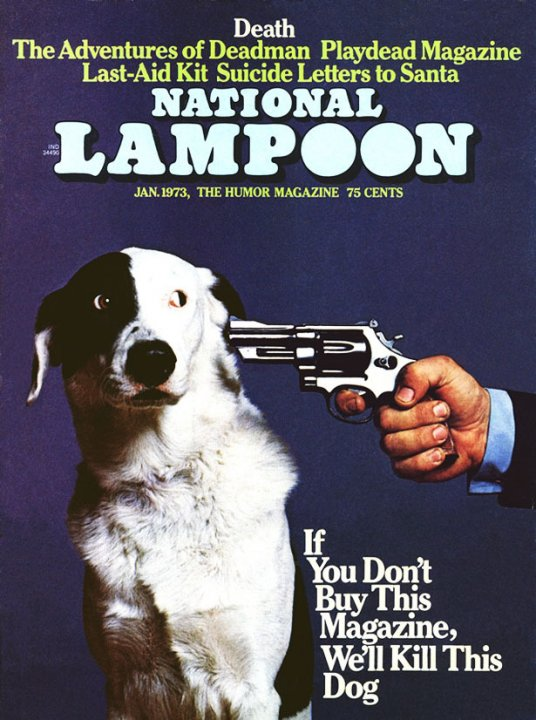

how I profited from gentle shame
Recently, Practical Typography completed its third year online. Last year, in my second annual report, I described having to face the conundrum shared by many online publishers: how to convert a massive flow of unpaid readership into dollars.
To address this problem, I tried an idea that I was pretty sure wouldn’t work. But to my surprise, it did. More about that below.

First, however, I want to thank all the readers who have paid for this book over the last year—either with a direct payment, or indirectly, by licensing my fonts. You’ve made it possible for me to keep improving this book, along with its underlying publishing software, Pollen.
When I launched this book, I said it was
Readers who pay for books are the best readers in the world. Without you, there won’t be any more books. Thank you for doing your part and supporting the writing you find valuable.
By stimulating font sales and direct payments, Practical Typography generated reasonable revenue in its second year—about $11,155. But that was a decline from its first year, when it generated about $14,926.
I had expected revenue to go down. What I hadn’t expected is that in the second year, traffic went up. That meant that a smaller percentage of readers were supporting the book with any kind of payment. Why? And was there a way to reverse the tide?
As I saw it, the challenge was how to convert more of those short-attention-span readers to paying customers, without turning Practical Typography into a nonstop parade of wheedling, begging, and nagging.
So what happened in the third year?
In year one, I got about 650,000 readers. This increased to about 700,000 readers in year two. In year three, however, traffic went down to about 615,000 readers—roughly a 13% drop. Since I track these numbers with Google Analytics, it’s possible the drop is overstated because of the accelerating rise of ad blockers (including the content blockers supported by iOS 9, starting last September), which often block Google Analytics as well.
But consistent with my comments last year, I think it’s wise for web authors to detach themselves from their traffic figures (or Twitter followers, or Facebook likes, or Stack Overflow rep, or GitHub stars). Exposure doesn’t have any predictable relationship to money. Never has.
Indeed, if you believe that it costs money to serve web pages—and yes, it does—then maybe the best outcome is to collect more money from fewer readers, as it suggests you’re getting better at finding the people who will pay for your work.
As in the previous two years, font sales were the foundation of the book’s revenue. In year one, I estimated there were 450 font transactions attributable to Practical Typography
The big change was in direct payments—where I ask readers to voluntarily send between $5 and $20, as befits their appreciation of the book. In year one, I collected 321 payments totaling $3676. In year two, 244 payments totaling $3030. But in year three, I collected 489 payments totaling $5472—a 100% increase in payments, and an 80% increase in revenue.
Not bad! That means that total revenue for Practical Typography increased from $11,155 in year two to $13,222 this past year—an 18% revenue increase despite a 13% traffic drop. A total of 799 readers opened their wallets, which is better than the first or second year.
Of course, this is not life-changing, quit-your-day-job money for anyone. But as I said in my first report,
At the end of year two, I thought about ways I could encourage more readers to pay. As I said above, nonstop wheedling and begging was out—that would’ve made the book permanently ugly & annoying. Not really what I’m going for.
A few self-styled web-publishing pros sent me well-meaning advice—like integrating such-and-such app into the website, or starting an email newsletter, so I could harass readers more often, etc. These are nice ideas. If they work for others, great. But my time is limited. I can’t spend dollars to chase dimes.
What I realized after last year’s report is that these massive flows of unpaid traffic emanated from only about 15–20 websites. Also, recalling the National Lampoon cover, I wondered if maybe a life-or-death appeal might move the needle.
So I settled on a strategy of gentle, targeted shaming. I added exactly one page to this website, and then updated my .htaccess file so that visitors from only those 15–20 sites would see that page when they arrived:
HELP KEEP THIS BOOK ALIVE
(click to see the whole thing)
A little dramatic? Maybe. So what? It’s all true: I am sick of bottom-feeding clickbaiters and social-networking billionaires profiting from my material, while contributing nothing in return. (Remember: exposure isn’t money.)
Don’t worry—as a web author, I know better than to yell at clouds. The clickbait economy will always be part of the web, just like ad-supported network television. I accept it. (Though to be fair to network television, they do pay for what they broadcast.)
But I continue to believe that there’s room for more than just that. Unfortunately, when we as readers click from link to link, and nothing is ever asked of us, something gets lost in translation: that what makes the web good at all are the individual humans who share their writing, their photos, their music, their videos.
It worked.
5 Aug 2016